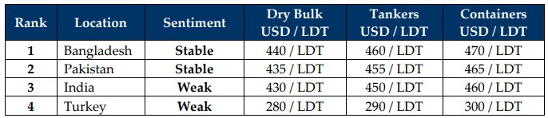

inWeekly Demolition Reports10/03/2025

In the middle of all of the unfolding static, a lot of noise appears to be emanating (and getting louder) with each passing weekas politically infused trade wars amongst leading global powers continues to threaten the state of world economies. The unending tit-for-tat tariffs that went into effect this week from America and its allies continued to affect the shipping sector as not only has the U.S. Dollar finally eased against major ship recycling destinations, except (ironically) in Pakistan this week where the Dollar strengthened and broke past another historic record, but ongoing Russian attacks on Ukraine continue also saw Trump threaten further sanctions against Russian banks and exports, which saw WTI crude prices continue to see declines and report another 3% drop even though Russia has suggested that OPEC+ countries would maintain oil output in the interim. Consequently, rates fell, and oil ended the week at USD 67/barrel. In the face of falling oil prices, charter rates continue to climb as Dry Bulk carriers, Capes and even Panamax sectors reported rising rates this week, resulting in the ongoing shortage of tonnage that has been increasingly obvious at the bidding tables of late. Yet, local port positions continue to report healthy arrivals and deliveries from the recent fire sale that saw both Bangladeshi and Indian waterfronts end another week on a busy note.
Meanwhile, following another quiet week of unremarkable activity, recycling markets are also being drug into the state of economic global stasis as Q1 2025 is proving itself to be somewhat of a turbulent time given that over USD 150/LDT has now been wiped off of vessel highs since Jan 2024 where a container breached the now long-forgotten USD 600/LDT mark, and ongoing economic / trade pressures continue to push vessel prices down while hampering sentiments and aggression from the various ship recycling destinations, despite an omnipresent demand permeating at new lows. And even though all the hints of a price correction are mushrooming from most markets, especially as local steel plate prices continue to react to the unfolding tariffs, the ability of ship recyclers to be aggressive is being curtailed at an increasing rate that continues to affect the global residual values of recycling candidates, when compared to the levels witnessed amidst the recent surge in supply back in January, followed by the ongoing and dithered supply since February. And amidst mounting geopolitical pressures, ship recycling sales have slowed to such an extent that most yards are now either concentrating on recycling their recent deliveries, all while tier-2 recyclers lie dormant in wait to snag a new low-priced deal, helping demand stay afloat even if prices remain slippery.
In Bangladesh, increasing protests and political clashes re-emerge, while Indian recyclers fail to maintain the trajectory of their prices leading to a gradual approach to Pakistani levels, which themselves have (inadvertently) rendered this market a touch more active of late and helped them slip into 2nd place. Turkey at the far-end reported no meaningful change despite a surprising sale surfacing this week. Overall, ship recycling yards keen to continue operations are busy upgrading their facilities ahead of the Hong Kong Convention’s (HKC) entry into force on 26 June 2025 as the changing documentary requirements and new incoming formalities need to be addressed.
For Week 10 of 2025, GMS Market Rankings / vessel indications are as below.

📄 Download PDF: Ship-recycling-market-insight-Week-10-03-07-2025-Static_Noise.pdfSource: GMS,Inc.https://www.gmsinc.net/gms_new/index.php/web